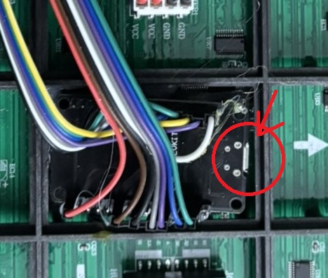

Infomatrix Firmware Update Guide
Please follow these steps to update your device firmware.
Prerequisites:
- A PC or Laptop with a USB port.
- A standard USB data cable. Usually MicroUSB.
- Appropriate screwdriver.
Step 1: Access the Hardware
- Locate the side of the device cover that displays the "Infomatrix" label.
- Using a screwdriver, carefully remove the screws securing that side of cover.
- Remove the cover to expose the internal components.
- Locate the microcontroller's USB port inside the device.

- Connect the device to your PC using the USB cable.
Step 2: Prepare to Flash - Firmware upgade
- Open a web browser on your PC (Google Chrome or Edge).
- Navigate to the following link: Infomatrix Web Flash
- Select your Infomatrix device model and desired version from the dropdown menu.
- Click the "Flash" button.
- A system pop-up window will appear asking you to select a connection port.
- Identify the correct COM Port associated with your connected device.
- Select the port and click "Connect" and "Install" to begin the process.
Step 3: Completion
- Wait for the installation process to complete. This typically takes 1–2 minutes.
- Once finished, your device will automatically reboot.
- Unplug the USB cable and reinstall the cover, ensuring the screws are not overtightened.
Important: After the reboot, your previous settings may be reset. You will need to reconfigure your device settings (WiFi, preferences, etc.) before use.